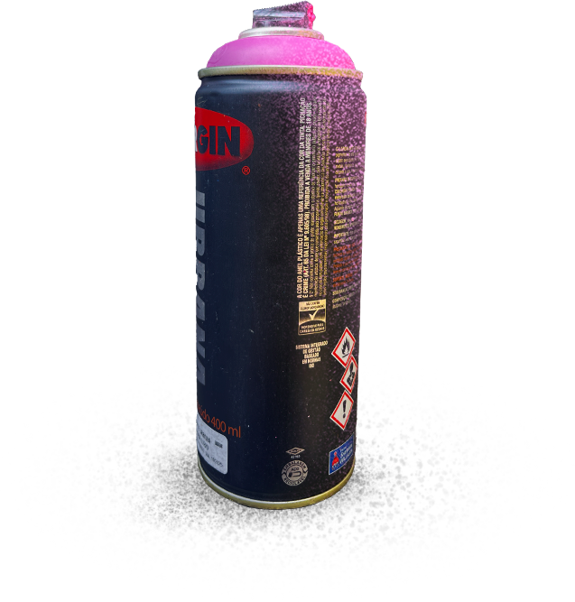
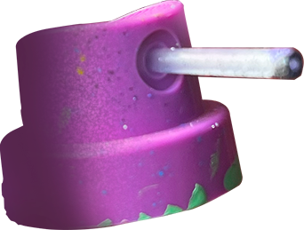
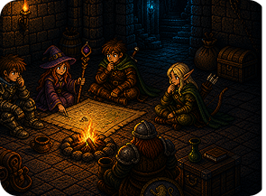
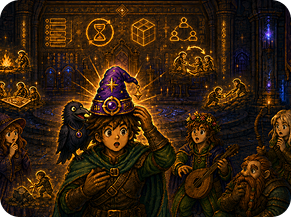

Em breve
Projetos em destaque
SOBRE MIM
Minha Trajetória.
01 / 04
Da rua para o design.
Minha relação com o processo criativo começou nas artes visuais, principalmente através da tatuagem, ilustração e graffiti. Foi onde comecei a explorar composição, cor, identidade e diferentes formas de comunicar visualmente.
Selecione uma imagem para percorrer minha trajetória.

MAPA DE HABILIDADES
Design, código e processo.
Explore as áreas para conhecer as ferramentas e conhecimentos que fazem parte da minha trajetória.
Desenvolvimento
Design & UX
Processo & Arquitetura
VISÃO GERAL
Um repertório multidisciplinar.
Minha experiência combina desenvolvimento, design e processos, permitindo transitar entre a concepção visual de uma solução, sua estrutura e sua implementação.
Desenvolvimento de Software Multiplataforma
FATEC Jacareí
Design de Produto
Anhembi Morumbi
Trilha UX Design
Programa Desenvolve · Grupo Boticário
Formação Figma & UX Design
Alura
Processo criativo
Do primeiro rascunho ao código.
Esboço
Ideias começam no papel, explorando possibilidades, referências e diferentes caminhos para a solução.
PROJETO 01 · ACADÊMICO · 1DSM · 1º SEM. 2026
Scrum Dungeon


SOBRE O PROJETO
Scrum Dungeon é uma plataforma gamificada desenvolvida para tornar o aprendizado da metodologia Scrum mais interativo e envolvente, utilizando elementos de RPG e progressão ao longo da experiência.
MINHA CONTRIBUIÇÃO
Atuei como Product Owner, sendo responsável pela comunicação com o cliente, organização do Product Backlog e definição das prioridades do projeto.
Também participei da prototipação, definição dos fluxos, identidade visual e implementação do front-end, além da arquitetura e de funcionalidades do back-end.
Foi muito divertido contribuir em todas as etapas desse projeto, aplicando o método Scrum enquanto pensávamos em como construir uma experiência imersiva que ensinasse sobre o próprio método.
Trabalhar em uma grande equipe foi desafiador e só foi possível graças à nossa organização, comunicação e muita adaptação.
O aprendizado que fica é sobre saber priorizar as demandas, manter a transparência e trabalhar em coletivo.
TECNOLOGIAS
HTML · CSS · JavaScript · EJS · Node.js · Express · PostgreSQL · Figma
ARQUITETURA E DESENVOLVIMENTO
Renderização com EJS, lógica de negócio centralizada no servidor, banco PostgreSQL com DDL/DML explícitos e fluxo de versionamento baseado em Git Flow com Pull Requests.